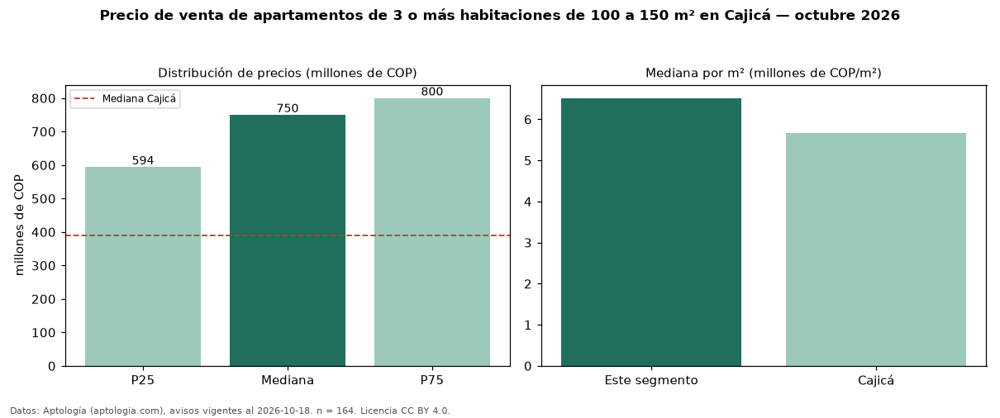

Precio de venta de apartamentos de 3 o más habitaciones de 100 a 150 m² en Cajicá — octubre 2026
COP 750 millones es el precio mediano de apartamentos de 3 o más habitaciones de 100 a 150 m² en venta en Cajicá (n = 164 avisos). Eso es 67 % más que la mediana de los apartamentos de 3 o más habitaciones en venta de Cajicá (COP 450 millones, n = 917); este segmento reúne el 18 % de esos avisos. Por metro cuadrado, la mediana es COP 6,52 millones/m² (n = 164), 16 % por encima de los apartamentos de 3 o más habitaciones en venta de Cajicá (COP 5,61 millones/m²). El área mediana anunciada es 114 m². La administración mediana declarada es COP 536.200 al mes (n = 147). El estrato más frecuente es 4 (51 % de los avisos con estrato). La mediana de todos los apartamentos en venta de Cajicá es COP 390 millones (+92 % de diferencia). La mitad central de los avisos va de COP 594 millones a COP 800 millones (razón 1,3), una dispersión baja. Datos: Aptología (aptologia.com), CC BY 4.0 — https://www.aptologia.com/venta/cajica. Archivos: PDF, CSV con las cifras y gráfica PNG.

| Avisos únicos | 164 |
|---|---|
| Percentil 25 | COP 593.750.000 |
| Mediana | COP 750.000.000 |
| Percentil 75 | COP 800.000.000 |
| Mediana por m² | COP 6.516.393 |
Fuente: avisos vigentes de portales inmobiliarios recopilados por Aptología, deduplicados (mínimo 30 avisos únicos por celda). Precios pedidos, no cerrados. Fecha: 2026-10-18.